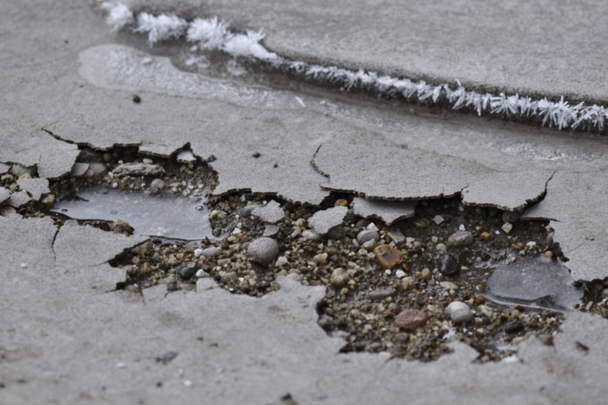
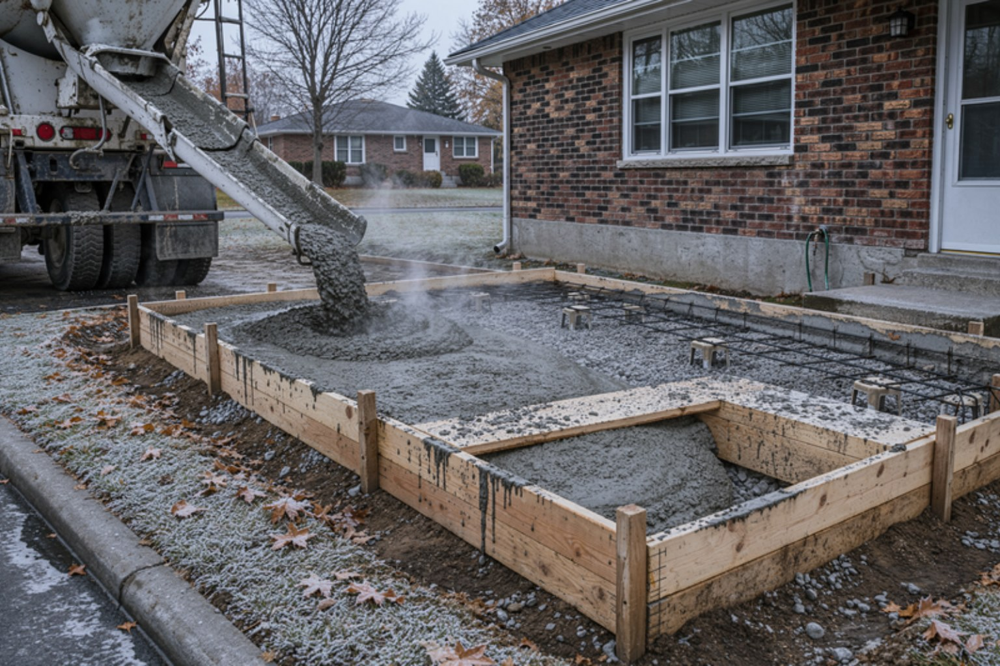
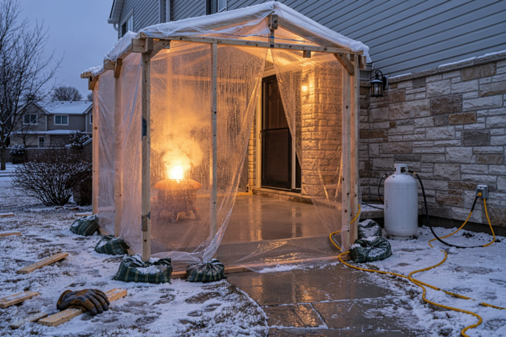

Concrete does not set by drying. It sets by a chemical reaction between cement and water called hydration, and that reaction is driven by heat. Warm concrete hydrates fast and gains strength fast. Cold concrete hydrates slowly. Frozen concrete stops hydrating altogether, and if it freezes early enough, it never recovers. That is the whole subject of pouring concrete in cold weather in Toronto, and everything below follows from it.
So the question is never whether the crew can work in the cold. It is whether the slab can be kept warm enough, for long enough, to reach the strength on the delivery ticket before the first hard frost gets into it.
What Counts as Cold Weather for Concrete in Ontario
The Canadian concrete standard, CSA A23.1, defines cold-weather concreting as any pour where the air temperature is at or below 5°C, or is forecast to fall below 5°C within 24 hours of placing. Note the second half of that. It is not the temperature at noon when the truck arrives that matters. It is the overnight low while the concrete is still soft.
Once you are in cold-weather territory, the rules change. The concrete must arrive on site at 10°C or warmer. After placing, it has to be held above about 10°C for a minimum of three days, and for exterior flatwork that will see salt and freeze-thaw, we treat seven days as the real number. The critical threshold is roughly 3.5 MPa of compressive strength: once the concrete gets there, there is not enough free water left to do damage if it freezes. Below that, a freeze is catastrophic.
For context, Toronto’s average overnight low in the second half of November is already around 0°C, and by early December it is -4°C or colder. In Vaughan, Richmond Hill and Caledon, add another degree or two of cold. In other words, by now every pour in the GTA is a cold-weather pour, and it is a question of how much protection, not whether.
A slab does not care how warm it was when the truck left the plant. It cares how cold it got at 4 a.m. on the second night.
What Happens When Fresh Concrete Freezes
Water expands about 9% when it turns to ice. In concrete that has not yet reached 3.5 MPa, that expansion happens inside a paste that has barely started to bond. The ice pushes the cement grains apart, the hydration that was underway stops, and when the ice melts it leaves voids where strength should have been. Concrete that freezes in its first 24 hours can lose up to half of its design strength, and no amount of warm weather afterward brings it back.
You rarely see this on day one. What you see is a slab that looks fine in December and then starts scaling in March: the top few millimetres flake off in thin sheets, exposing sand and aggregate, usually worst where water pooled or salt was applied. We get called to look at these every spring across Mississauga and Brampton, and the story is always the same: poured late, blankets came off too soon or were never used, and the first real freeze hit a slab that was still green.

A scaled slab is usually sound underneath and can often be saved with a bonded overlay rather than a tear-out; see our concrete repair service. But it is a repair that should never have been needed.
How a Cold-Weather Pour Is Actually Done
Cold-weather concreting is not exotic; commercial crews do it all winter in Toronto. On a residential job every protective step costs money against a much smaller pour, so the question becomes which steps are worth it. Here is the toolkit, in the order we reach for it.
- Hot-water batching. The ready-mix plant heats the mix water so the concrete leaves the plant at 15–20°C instead of 8. This is the cheapest and most important step, and any GTA plant will do it in November without being asked.
- A non-chloride accelerator. An admixture that speeds up early hydration so the concrete reaches 3.5 MPa in hours rather than a day. We specify non-chloride on anything with steel in it. Calcium chloride is cheaper and works, but it corrodes rebar and mesh and darkens the surface unevenly.
- Higher cement content or Type HE cement. More cement means more heat of hydration. The concrete essentially warms itself. The trade-off is slightly more shrinkage, so joint layout matters even more.
- Thawed, dry ground. Concrete is never placed on a frozen base. The base thaws later, settles, and takes the slab with it. If the granular base froze overnight, it gets covered the day before or thawed with a ground heater.
- Insulated curing blankets. Quilted blankets go on as soon as the surface can take them, usually within a couple of hours of finishing, and stay on for a minimum of three days, seven if the forecast is unkind. They trap the concrete’s own heat. A slab under blankets in -3°C air can sit comfortably at 12–15°C.
- A heated enclosure. For steps, a landing or a small porch, we can frame a temporary tent in poly sheeting and run an indirect-fired or propane heater inside it. This is what makes a December pour possible. It also roughly doubles the labour on a small job, which is why it only makes sense when the pour genuinely cannot wait.

Ask any late-season contractor two questions: what temperature will the concrete arrive at, and how many days will the blankets stay on. If the answer to the second one is “overnight” or “we’ll see,” walk away. The blankets are not a courtesy. They are the cure. Pulling them on day two to show the client a finished step is the most common way a November pour fails in March.
Cold-Weather Concrete Pouring Cost in Toronto (2026)
Cold-weather protection is priced as an add-on to normal pouring rates. On flatwork it is a per-square-foot premium for hot-water batching, accelerator and blankets. On steps and landings it is usually a flat charge for the enclosure and heater, plus the extra days of attendance. The ranges below are typical for Toronto and the GTA in late 2026; they sit on top of our normal poured concrete pricing.
| Item | GTA, Late 2026 | Notes |
|---|---|---|
| Broom-finish flatwork, normal season | $12 – $20 / sq ft | Walkways, pads, plain driveways |
| Cold-weather premium on flatwork | + $1.50 – $3.50 / sq ft | Hot water, non-chloride accelerator, blankets, extra site days (roughly +10–20%) |
| Stamped concrete, normal season | $22 – $32 / sq ft | We do not stamp below about 5°C; colour and release cure unevenly |
| Heated enclosure for steps or a landing | $600 – $1,800 per job | Framing, poly, heater and fuel for 3–7 days |
| Front steps + landing, normal season | $4,500 – $9,000 | Includes demolition of the old steps |
| Front steps + landing, late season with protection | $5,200 – $10,500 | Same scope plus enclosure and extended cure |
| Interim winter safety fix on failed steps | $250 – $800 | Patch, shim and traction grit to get through to spring |
| Resurfacing a scaled porch or walkway in spring | $2,500 – $6,000 | Bonded overlay, no demolition, when the slab underneath is sound |
Put plainly: on a full driveway, the cold-weather premium can run to a couple of thousand dollars for a job that would be cheaper, faster and lower-risk in May. On a set of front steps that are a genuine hazard, $600–$1,800 for an enclosure is often worth paying. That is the line we draw.
What We Will and Will Not Pour in November and December
We would rather lose a late-season job than warranty a slab we do not trust. Here is where we land in the GTA once the overnight lows are below freezing.
- Yes, with blankets: a walkway, small pad or landing on a day above 5°C with a forecast that stays above about -5°C overnight for the next three nights. Hot-water batch, accelerator, blankets on for a week.
- Yes, with an enclosure: front steps and landings where the old steps have failed and someone has to use them all winter. A heated tent lets us pour into early December with confidence, at the premium above.
- No: driveways and large patios once sustained lows are below -5°C. The area is too big to enclose, the premium is too high, and a parked car on a green slab in January is a scaling problem waiting to happen.
- No: stamped or coloured concrete below about 5°C. The pattern needs the surface to firm up on a predictable schedule, and cold concrete does not keep one. Integral colour also cures blotchy in the cold. Stamped work waits for spring, full stop.
- No: any pour on a frozen or snow-covered base, regardless of the air temperature that afternoon.

Concrete poured this late is still gaining strength through January. Keep de-icing salt off it entirely until spring, use sand for traction, and shovel it rather than letting snow melt and refreeze on the surface. We cover this in detail in our guide to protecting concrete from Toronto’s freeze-thaw cycles.
If You Have a Failed Slab Right Now
Most late-November calls are not about a new patio before Christmas. They are about a front step that has pulled away from the house or a walkway slab that has dropped, and someone who could fall on it in January. There are three sensible answers.
- Make it safe now. A heaved step can be shimmed and patched, a drop can be ramped with a repair mortar, and a slick surface can be given traction grit, all for a few hundred dollars. It is not pretty. It gets you to April.
- Pour the steps now if they truly cannot wait. With an enclosure, a steps-and-landing pour is a safe late-season job. We will tell you honestly whether yours is in that category or whether a patch will do.
- Book spring and watch it over the winter. This winter is a free diagnostic. If the crack opens or the step moves again after the first deep freeze, the base has failed and it is a re-pour. If nothing moves, it may be a resurfacing job at 40–60% less. Our resurface-or-replace guide explains how we tell the difference.
Resurfacing has a slightly longer season than pouring because the overlays are thin and cure fast; in a mild fall they run into late November when a pour is already off the table. Our post on the best time to resurface in the GTA covers that window.
Where We Work
Artisan Coat pours and resurfaces concrete steps, walkways, driveways, porches and patios across Toronto, Mississauga, Brampton, Vaughan, Oakville, Etobicoke, North York, Scarborough, Richmond Hill, Markham, Burlington, Milton, Caledon, Hamilton and the wider GTA. Late-season pours, winter safety repairs and spring bookings are all handled by the same crew, with a written warranty on every job. For full-depth replacement or Jewelstone decorative resurfacing, see our services.
The Short Version
In Ontario, any pour at or below 5°C is a cold-weather pour, and by the third week of November that is every pour in the GTA. Concrete that freezes before it reaches about 3.5 MPa can lose half its strength for good and will scale in its first spring. Hot-water batching, a non-chloride accelerator, a thawed base and insulated blankets kept on for a week make small pours safe down to about -5°C overnight; a heated enclosure extends that for steps and landings into early December at a premium of roughly $600–$1,800. Driveways, patios and anything stamped wait for April.
Pouring concrete in cold weather in Toronto is a matter of discipline, not bravery. If the crew keeps the heat in and the salt off, a November slab lasts as long as a June one. If they do not, you will see it by March.